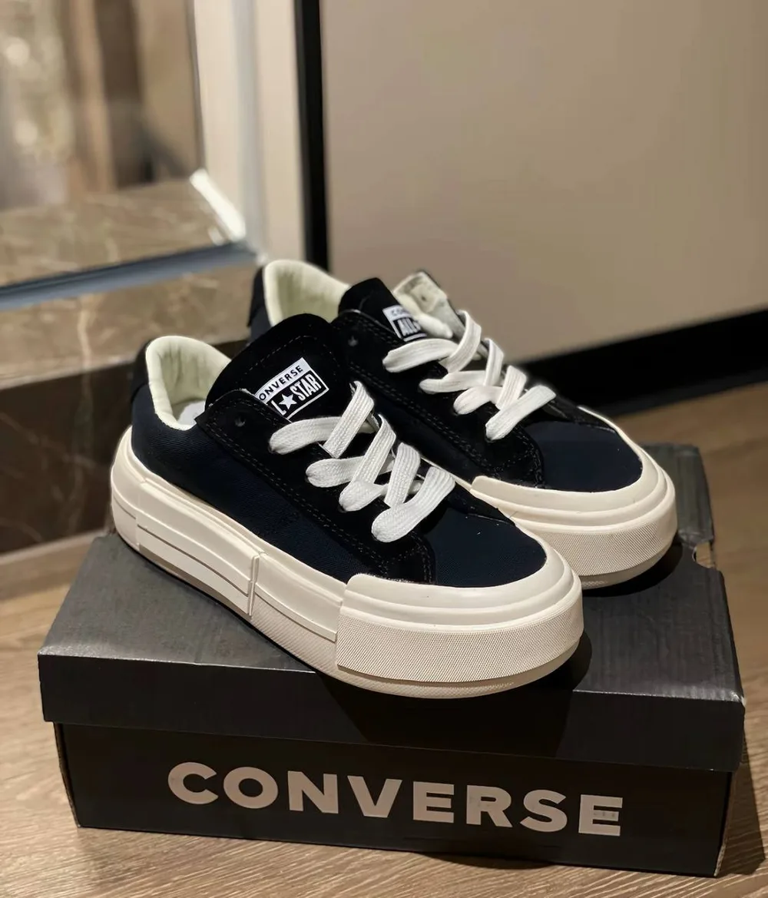

ВЗГЛЯНИ СО ВСЕХ СТОРОН
Теперь объёмно.
Выбирай пару. Вращай. Нажми на деталь.
Собираю объёмную пару…
Поверни кроссовок пальцем или мышью
Объёмная реконструкция по фотографиям. Скрытые детали условные; размер и посадка не измеряются.
ВЗГЛЯНИ СО ВСЕХ СТОРОН

Собираю объёмную пару…
Объёмная реконструкция по фотографиям. Скрытые детали условные; размер и посадка не измеряются.